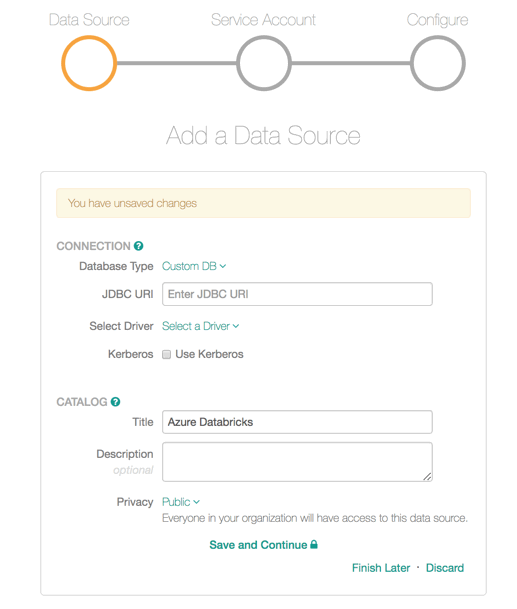
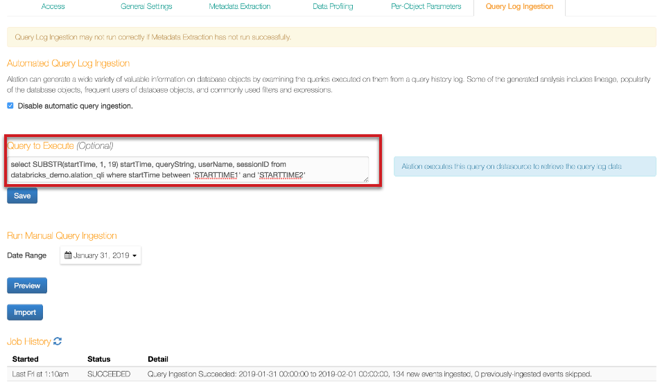

Databricks Azure¶
Scope of Support¶
Automatic MDE, Sampling and Profiling, file-based QLI, Popularity, Lineage, Compose
Delta tables are supported. Alation has the ability to extract Delta tables and supports Metadata Extraction, Profiling, and Compose. Users can write queries against Delta tables in Compose. Delta tables are represented as Table objects in the Alation Catalog.
Partitioned tables are supported
For QLI, logs can be located on Azure Blob Storage, ADLS Gen 1 or Gen 2
From 2020.4, OAuth authentication for Compose: Azure Databricks: Configure SSO through OAuth for Compose
Preliminaries¶
The following information and configuration is required to configure an Azure Databricks connection in Alation:
JDBC driver to connect to the database. Alation has certified the Simba Spark JDBC Driver for Azure Databricks. Refer to the appropriate version of Support Matrix for the driver version.
Important
From 2020.4, this driver is available in the list of drivers in Alation. There is no need to add it to the Alation server as a custom driver.
For earlier releases:
Driver information and download: Apache Spark ODBC and JDBC Drivers with SQL Connector.
JDBC URI
Format of the URI for the Simba driver:
spark://<hostname>:443/default;transportMode=http;ssl=1;httpPath=<databricks_http_path_prefix>/<databricks_cluster_id>;AuthMech=3;
Example:
spark://eastus.azuredatabricks.net:443/default;transportMode=http;ssl=1;httpPath=sql/protocolv1/o/5678080404529670/1129-091234-pooh138;AuthMech=3;
Service account with privileges to access the Azure Databricks cluster for Metadata Extraction and Profiling. Alation recommends to use the following type of authentication:
Token-based Authentication: For information on how to generate a unique token and use it for authentication, see Authentication using Databricks personal access tokens in Databricks documentation.
Server-side access to to place the custom driver on the Alation system.
Additional configuration for QLI on the Databricks side:
File-based QLI (recommended)
Table-based QLI
Pre-configuration for OAuth on the Azure Portal and Databricks side. Please see Azure Databricks: Configure SSO through OAuth for Compose.
Service Account¶
Metadata Extraction¶
The service account must be able to access the tables and metadata to complete the extraction process. Service account requires access to the Databricks cluster.
Sampling and Profiling¶
The service account requires access to the Databricks cluster to perform Profiling/Sampling.
Steps in Alation¶
Step 1 - Add the JDBC Driver¶
Alation has certified Simba Spark JDBC Driver for Azure Databricks to be used with Azure Databricks data sources. Refer to the appropriate version of Support Matrix for the driver version.
This step only applies to releases below 2020.4. From 2020.4, the Simba Spark JDBC Driver is available in Alation.
Refer to Add Custom Drivers to add the custom driver.
Important
Simba Spark JDBC Driver for Azure Databricks needs to be fixed with the Driver Fixer tool before it can be used in Alation: Driver Fixer.
Step 2 - Set up the Connection¶
Add a new data source and select the Custom DB as the Database Type. Enter the JDBC URI and select the JDBC driver you have added to Alation (Simba Spark JDBC Driver 2.6.16) from the Select Driver drop-down list. Provide other required information and click Save and Continue:
{kind=link}
Step 3 - Enter Service Account Credentials¶
Enter the token information in the Username and Password fields as follows:
Username: type the word
token.Password: enter the token string.
{kind=link}
Step 4 - Configure Your Data Source¶
Click Skip this Step. QLI for this type of data source is set up on the Settings > Query Log Ingestion tab and requires additional configuration on the Databricks side.
After this step you are navigated to the Settings page of your data source.
OAuth for Compose¶
You can configure OAuth for Compose on the General Settings tab. For details, see Azure Databricks: Configure SSO through OAuth for Compose.
Metadata Extraction¶
Before running MDE, set the Catalog Objects Definition (available from version 2020.3). Without it, the Simba driver adds the spark. prefix to extracted metadata objects: Set the Catalog Object Definition.
To set the Catalog Object Definition,
On the Settings page, open the Custom Settings tab.
For Catalog Object Definition, select Schema.Table.
{kind=link}
Open the Metadata Extraction tab of the settings to configure and perform MDE.
For Azure Databricks, Alation supports automatic MDE, manual or scheduled. Custom query-based MDE is not supported for this type of data source.
To configure and run MDE,
On the Metadata Extraction tab, select or exclude schemas to be extracted, and then run MDE manually or set a schedule. See Perform MDE for details.
Sampling and Profiling¶
To configure and run Profiling for this type of data source, refer to Sampling and Profiling.
Before you run Profiling, consider setting the Limit Query Template (available from 2020.3). See Custom Settings > Limit Query Template. For Azure Databricks, this is:
SELECT COLUMNS FROM TABLE_NAME FILTER_CLAUSES LIMIT ROW_SIZE.
Steps to Configure Query Log Ingestion¶
File Based QLI¶
This is the recommended approach. For general information about file-based QLI, see File-Based Query Log Ingestion.
Note
QLI is supported for Standard and High Concurrency Databricks clusters.
QLI configuration requires that you enable logging on your Databricks Cluster. There are several ways to enable logs for QLI. You can either add a Python init script to your Cluster to enable logs (recommended) or use a script to enable logs and run it every time the Cluster is started or restarted
Alation recommends to use the Python init script method (certified by Alation from version 2021.2 ) as this method generates log files of smaller size and the admin does not need to run the script again when the Cluster is restarted.
Enable Logs with an Init Script¶
Applies from 2021.2
This is the recommended option. Perform the steps in this sections to enable QLI using the Python init script:
In the Databricks settings portal, ensure that the Cluster Log Path and Destination are set under the Logging tab. Do NOT leave the Destination path as None.
For more information on how to set the logging path in DBFS, see MS Documentation. You need to mount external storage onto the DBFS for log storage. For more information on the mount process, see:
Create a Python Notebook and run the following script on your Databricks Cluster using this Python notebook. This script creates the scripts directory where the QLI script will be stored:
dbutils.fs.mkdirs("dbfs:/databricks/scripts/")
In the same notebook, run the script given below to create the file with the init script in the scripts directory.
dbutils.fs.put("/databricks/scripts/init.sh",""" #!/bin/bash echo "Executing on Driver: $DB_IS_DRIVER" if [[ $DB_IS_DRIVER = "TRUE" ]]; then LOG4J_PATH="/home/ubuntu/databricks/spark/dbconf/log4j/driver/log4j.properties" else LOG4J_PATH="/home/ubuntu/databricks/spark/dbconf/log4j/executor/log4j.properties" fi echo "Adjusting log4j.properties here: ${LOG4J_PATH}" echo "log4j.logger.org.apache.spark.sql.execution.SparkSqlParser=DEBUG" >> ${LOG4J_PATH} echo "log4j.appender.publicFile.layout.ConversionPattern=%d{yyyy-MM-dd HH:mm:ss.SS} [%t] %p %c{1}: %m%n" >> ${LOG4J_PATH}""", True)Note
Alternatively, you can create the init script given below locally and copy it to the Databricks cluster using the following command:
dbfs cp init.sh dbfs:/databricks/scripts/init.sh
Use the following command to make sure that the script was created successfully:
display(dbutils.fs.ls("dbfs:/databricks/scripts/init.sh"))Use the cluster configuration page to configure the cluster to run the init script: Add init script.
Restart the cluster.
{kind=link}
Enable Logs With a Python Script¶
In the Databricks settings portal, ensure that the cluster log path and destination is set under the Logging tab. Do NOT set the DESTINATION PATH as NONE.
For more information on how to set the logging path in DBFS, see the corresponding Databricks documentation.
You can choose to mount external storage onto the DBFS for log storage. For more information on mount process, see:
Open a Databricks Python notebook. For more information on creating a notebook, see Create a Notebook
{kind=link}
Copy the contents of the Python script below to enable DEBUG query logs that contain SQL queries and set the pattern in which logs have to show up. This Python script should be run whenever the cluster gets started or restarted.
Python script to enable DEBUG query logs:
log4j = spark.sparkContext._jvm.org.apache.log4j log4j.LogManager.getRootLogger().setLevel(log4j.Level.DEBUG) ca = log4j.LogManager.getRootLogger().getAppender("publicFile") ca.setLayout(log4j.PatternLayout("%d{yyyy-MM-dd HH:mm:ss.SS} [%t] %p %c{1}: %m%n"));
Set Up File-Based QLI in Alation¶
On the Query Log Ingestion tab, clear the Enable table based query log ingestion checkbox. This reveals the field named Log Extraction Configuration Json.
Paste the JSON given below in the Log Extraction Configuration Json field.
In the JSON, change the folder path to the path of the storage mount where the generated logs (the Logging Path you have configured under Logging on the Databricks side) are stored and click Save.
{kind=link}
{ "folderPath":"/path/to/log/file/", "nThread":"10", "threadTimeOut":"2000", "parserType":"LOG4J", "log4jConversionPattern":"TIMESTAMP [THREAD] LEVEL LOGGER MESSAGE", "log4jTimeFormat":"yyyy-MM-dd HH:mm:ss.SSS", "requiredExtraction":[ { "fieldName":"extractSqlQuery", "keyValuePair":{ "loggerName":"SparkSqlParser", "regex":"Parsing command:(?<queryString>[\\w\\W]*)" } }, { "fieldName":"extractUserInfo", "keyValuePair":{ "loggerName":"audit", "regex":"ugi=(?:\\(Basic token\\))?(?<userName>[\\S]+)" } }, { "fieldName":"extractTimeTaken", "keyValuePair":{ "loggerName":"Retrieve", "regex":"Execution Time = (?<milliSeconds>[\\d]+)" } } ] }
Select the relevant Connection Type from the following list:
Amazon S3
Azure Blob Storage
ADLS
Provide the Connection configuration details based on the Connection Type and click Save Configuration. The Connection information is required for Alation to read the logs from the Logging Path:
Connection Type |
Configuration Details |
|---|---|
Amazon S3 |
|
Azure Blob Storage |
|
ADLS |
|
Under Run Manual Query Ingestion, select the Date Range.
Click Preview to preview the logs to be imported.
Click Import to perform QLI. The status of the QLI job will be reflected in the Job History table at the bottom of the page.
Table-Based QLI¶
QLI can be supported using the External table. For more information on external tables, see this article.
Steps to be done on the Databricks side:¶
After you have enabled the DEBUG-level logs as described in Enable Logs With a Python Script, create the logs directory in the cluster path. Create the required folder before running the next Python script. If this is not created, “File Not Found” error will occur.
dbutils.fs.mkdirs("dbfs:/cluster-logs/<cluster-id>/logs/")
Example:
dbutils.fs.mkdirs("dbfs:/cluster-logs/0130-102557-aft119/logs/")
Open a new Databricks Python notebook.
Copy the contents from the Python script below into a Python notebook cell. Replace the
input_dirandoutput_dirin the script with actual values.If you are accessing the directories mounted in the Databricks File System (DBFS), use the prefix
/dbfs/mnt/<mounted_filepath>.Example:
/dbfs/mnt/cluster-logs/0130-102557-aft119/driver/where/mnt/cluster-logsis the mounted path to a Blob file systemIf you are accessing the log files that are directly in DBFS, use the prefix
/dbfs/<filepath>Example:
/dbfs/0206-072111-lox669/driver/.
Python Script to enable QLI:
import gzip
import re
from datetime import datetime, timedelta
input_dir = '/dbfs/mnt/cluster-logs/0130-102557-aft119/driver/'
output_dir = '/dbfs/mnt/cluster-logs/0130-102557-aft119/logs/'
required_logger_line_regex = r'^\d+-\d+-\d+ \d+:\d+:\d+\.\d* \[[^\]]*?\] \S+ (?:SparkSqlParser|audit): .*'
logger_line_regex = r'^\d+-\d+-\d+ \d+:\d+:\d+\.\d* \[[^\]]*?\] \S+ \S+:.*'
prev_line = ''
line_count = 0
file_date_hour = str((datetime.now() - timedelta(days=0, hours=1)).strftime('%Y-%m-%d-%H'))
input_file_name = input_dir + 'log4j-' + file_date_hour + '.log.gz'
output_file_name = output_dir + 'log4j-' + file_date_hour + '.log.gz'
print('Transforming log4j-{}.log.gz'.format(file_date_hour))
with gzip.open(input_file_name, 'rt') as fin:
with gzip.open(output_file_name, 'wt') as out:
for line in fin:
line = line.strip()
if not line:
continue
if re.match(required_logger_line_regex, line):
if prev_line:
out.write(prev_line + '\n')
line_count += 1
prev_line = line
else:
if re.match(logger_line_regex, line):
if prev_line:
out.write(prev_line + '\n')
prev_line = ''
line_count += 1
elif re.match(required_logger_line_regex, prev_line):
prev_line = prev_line + ' ' + line
if prev_line:
out.write(prev_line + '\n')
line_count += 1
print('Lines written: ', str(line_count))
Note
Specify the correct file path for input dir and output dir. If the file path for input dir or output dir is not specified properly, the script will not be able to find the files.
Run the script after the previous hour log file is created and verify that you get the expected output. The expected output when the previous hour file name is log4j-2019-05-02-10.log.gz and when there is no query or user information in the file is as follows:
Transforming log4j-2019-05-02-10.log.gz Lines written: 0
The expected output when the previous hour file name is log4j-2019-05-02-11.log.gz and when there is query or user information is available in the file is as follows:
Transforming log4j-2019-05-02-11.log.gz Lines written: 275
Schedule the QLI Python script to run at or after 10 minutes past the hour. If the Python script is scheduled exactly at the hour, the log file will not be available. There will be a five minute delay in writing the contents to the log file and converting the log file into a compressed gzip file. So it is advisable to schedule the Python script to run at or after 10 minutes past the hour, which ensures the availability of log files.
Create an External Table with the location property set to the directory where the new files are stored.
For setting the Location property to the directories mounted in DBFS, use the prefix
/mnt/<mounted_filepath>
Example:
/mnt/cluster-logs/0130-102557-aft119/logs/where/mnt/cluster-logsis the mounted path to a Blob file system.For setting the Location property to the directory present in DBFS, use the prefix
/<filepath>
Example:
/0206-072111-lox669/logs/
Sample External Table Creation Query:
DROP TABLE IF EXISTS databricks_demo.external_log_table;
CREATE EXTERNAL TABLE
databricks_demo.external_log_table(
date_time_string STRING,
thread_name STRING,
level STRING,
logger STRING,
message STRING
)
ROW FORMAT
SERDE 'org.apache.hadoop.hive.serde2.RegexSerDe'
WITH SERDEPROPERTIES
("input.regex" = "^(\\S+ \\S+) \\[(.*?)\\] (\\S+) (\\S+): (.*?)")
LOCATION
"/mnt/cluster-logs/0130-102557-aft119/logs/";
Ensure that the external table is populated with the data from the files stored in the
output_dirby running a select query. This step ascertains that the external table is populated with data from files stored in theoutput_dir. Example:SELECT * FROM<SCHEMA.EXTERNAL_TABLE_NAME>Create the alation_qli view which takes this external table as an input and gives the data as required by Alation.
View Query for QLI:
DROP VIEW IF EXISTS databricks_demo.alation_qli;
CREATE VIEW
databricks_demo.alation_qli
AS
SELECT
distinct *, CONCAT(userName, '_', startTime) sessionId
FROM (
SELECT
a.date_time_string startTime,
regexp_extract(a.message, "Parsing command: (.*)", 1) queryString,
CASE
WHEN b.message is null THEN 'unknown'
WHEN SUBSTR(b.message, 6, 11) = 'Basic token' THEN TRIM(SUBSTR(b.message, 18, instr(b.message, 'ip=') - 19))
ELSE TRIM(SUBSTR(b.message, 5, instr(b.message, 'ip=') - 6))
END AS userName
FROM
databricks_demo.external_log_table a
LEFT OUTER JOIN
databricks_demo.external_log_table b ON (a.thread_name = b.thread_name)
WHERE
a.logger = 'SparkSqlParser'
and b.logger = 'audit'
and b.date_time_string > a.date_time_string
);
Steps to be done on the Alation side:¶
Go to your Databricks data source Settings page > Query Log Ingestion tab.
Select the checkbox Enable table based query log ingestion. This reveals a field named Query to Execute.
Enter the following query to enable table-based QLI for Databricks. Do NOT substitute values
STARTTIME1andSTARTTIME2; use them as is.Final Query:
SELECT SUBSTR(startTime, 1, 19) startTime, queryString, userName, sessionID FROM databricks_demo.alation_qli WHERE startTime between 'STARTTIME1' and 'STARTTIME2'
{kind=link}
Troubleshooting QLI¶
The query log file should be in a compressed file format .gz. If the file exists in a different format, the script throws a
File not founderror.Ensure the file name adheres to the log4j-yyyy-mm-dd-HH.log.gz format. Example: log4j-2019-03-27-01.log.gz. If the file exists in a format other than the specified format, the script will not pick up the file for execution.
If the input directory or output directory is not specified properly, the script will be executed, but throws an error:
{kind=link}
If the path is valid and the file is not found, the error message File not found in the path also occurs.